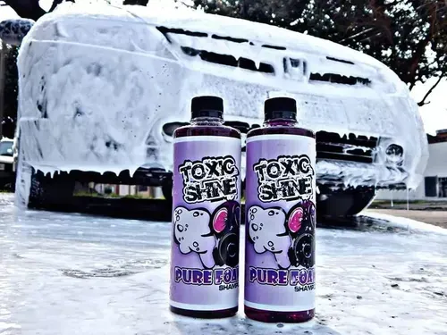
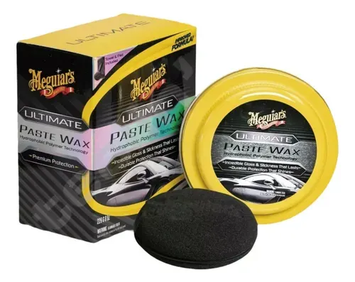
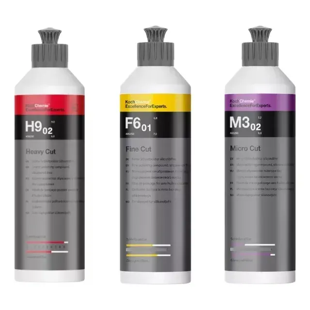

RAMOS GARAGE
Tienda de estética vehicular
RamosGarage nació en 2018 en Córdoba, Argentina, como un proyecto dedicado a los microbollos y la estética vehicular, siempre enfocado en el cuidado y la perfección de cada detalle. Con la experiencia adquirida a lo largo de los años, hoy trasladamos ese conocimiento a nuestra tienda online, especializada en la venta de artículos de limpieza vehicular, pastas de pulir, productos descontaminantes y todo lo necesario para mantener tu vehículo en óptimas condiciones. En RamosGarage seleccionamos productos de calidad, pensados tanto para profesionales como para entusiastas.
Productos destacados

Shampoo
Para lavado exterior, buen rendimiento.

Cera
Protege la pintura y da brillo.

Pasta de pulir
Ideal para marcas leves y acabado.